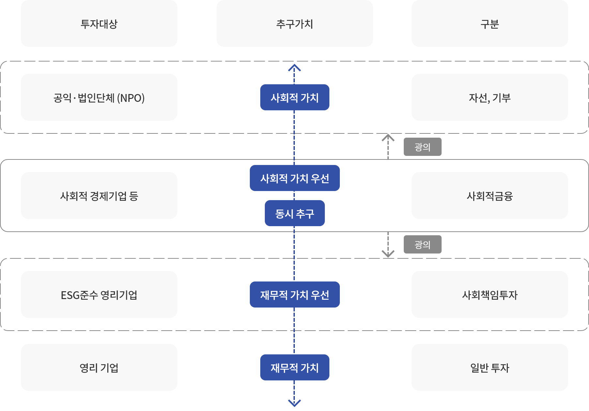

사회적금융이란
사회적가치(Social Value) 실현을 재무적 이익(Financial Return)과 함께 추구하는 금융
- 협의
-
사회적가치 창출을 목적으로 사회적경제기업 등에 투자·융자·보증을 통해 자금을 지원하는 금융 활동을 의미
사회적경제기업(사회적기업, 협동조합, 자활기업, 마을기업 등) 및 사회적가치를 우선적으로 추구하는 사회적 경제활동(공공성이 큰 재화·서비스의 생산·판매활동)
- 광의
-
추후 회수를 전제로 하는 투자·융자·보증뿐 아니라 보조금(Grant)과 자선행위(Philanthropy)도 포함하거나 환경·사회·지배구조(ESG) 우수기업에 투자하는 사회책임투자까지 포괄
서민금융진흥원은 사업수행기관(미소금융 기업·은행재단·지역법인,민간 사업수행기관)을 통해 (예비)사회적기업·사회적협동조합에 융자방식으로 자금을 지원하는 협의의 사회적금융을 수행하고 있습니다.
사회적금융 개념

사회적금융 현황 (공급측면)
정부ㆍ공공재원을 중심으로 기존 중소기업ㆍ서민 정책금융 지원체계 내에서 수행중
- · 미소금융, 중소기업정책자금 중 일부를 사회적기업에 대출
- · 지자체에서 다양한 사업을 실시 중(서울시는 “사회투자기금”을 조성하여 저리융자)
- · 신보, 지역신보는 사회적기업ㆍ협동조합에 대해 보증비율을 높인 특례보증 제공
- · 모태펀드 내 사회적기업 펀드를 별도 조성하여 민간자금과 매칭을 통해 사회적기업에 투자
민간재원을 활용한 자발적인 사회적금융은 다양한 시도가 있지만 절대적인 규모는 크지 않음
- · 일부 사회적금융중개기관은 민간부문에서 재원을 조달하여 상업적 원리에 기반한 임팩트투자를 수행
- · 지자체에서 다양한 사업을 실시 중(서울시는 “사회투자기금”을 조성하여 저리융자)
- · 신보, 지역신보는 사회적기업ㆍ협동조합에 대해 보증비율을 높인 특례보증 제공
- · 모태펀드 내 사회적기업 펀드를 별도 조성하여 민간자금과 매칭을 통해 사회적기업에 투자
정부ㆍ공공재원을 중심으로 기존 중소기업ㆍ서민 정책금융 지원체계 내에서 수행중
- · 미소금융, 중소기업정책자금 중 일부를 사회적기업에 대출
- · 지자체에서 다양한 사업을 실시 중(서울시는 “사회투자기금”을 조성하여 저리융자)
- · 신보, 지역신보는 사회적기업ㆍ협동조합에 대해 보증비율을 높인 특례보증 제공
- · 모태펀드 내 사회적기업 펀드를 별도 조성하여 민간자금과 매칭을 통해 사회적기업에 투자
정부ㆍ공공재원을 중심으로 기존 중소기업ㆍ서민 정책금융 지원체계 내에서 수행중
- · 미소금융, 중소기업정책자금 중 일부를 사회적기업에 대출
- · 지자체에서 다양한 사업을 실시 중(서울시는 “사회투자기금”을 조성하여 저리융자)
- · 신보, 지역신보는 사회적기업ㆍ협동조합에 대해 보증비율을 높인 특례보증 제공
- · 모태펀드 내 사회적기업 펀드를 별도 조성하여 민간자금과 매칭을 통해 사회적기업에 투자
정부ㆍ공공재원을 중심으로 기존 중소기업ㆍ서민 정책금융 지원체계 내에서 수행중
- · 미소금융, 중소기업정책자금 중 일부를 사회적기업에 대출
- · 지자체에서 다양한 사업을 실시 중(서울시는 “사회투자기금”을 조성하여 저리융자)
- · 신보, 지역신보는 사회적기업ㆍ협동조합에 대해 보증비율을 높인 특례보증 제공
- · 모태펀드 내 사회적기업 펀드를 별도 조성하여 민간자금과 매칭을 통해 사회적기업에 투자
우리나라의
주요 사회적경제기업 유형 · 현황
사회적기업(2007년)
- 소관부처
- 고용노동부
- 목적
- 취약계층 고용창출, 서비스 제공
- 근거법률
- 사회적기업육성법
- 개수(16년 말)
- 1,713개
협동조합
- 소관부처
- 기획재정부
- 목적
- 조합원 권익향상, 지역사회 공헌
- 근거법률
- 협동조합기본법
- 개수(16년 말)
- 10,640개
자활기업 (2012년)
- 소관부처
- 보건복지부
- 목적
- 수급권자 등의 자활지원
- 근거법률
- 기초 생활보장법
- 개수(16년 말)
- 1,149개
마을기업 (2010년)
- 소관부처
- 행정안전부
- 목적
- 지역환경 개선, 지역공동체 활성화
- 근거법률
- 행안부 지침
- 개수(16년 말)
- 1,446개
※ 출처 : 사회적금융 활성화 방안 (‘18.2월, 정부발표)
* 농협, 수협, 신협, 생협 등 특별법에 의한 8개 개별 협동조합도 사회적경제기업 범주에 포함